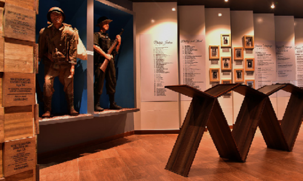

Red Hill &
India Peace Memorial
A significant World War II site where Japanese soldiers and the Indian National Army fought against the British. The India Peace Memorial honours the Japanese soldiers who lost their lives during the battle.
Maibam Lokpa Ching, Bishnupur District, Manipur
View on Map
TRAVEL TIPS
- Best time: Morning or late afternoon
- Maintain a respectful atmosphere at the memorial
- Wear comfortable footwear